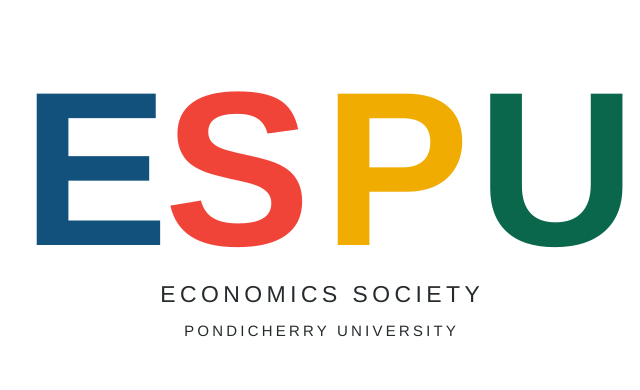

Student colloquia
Present and discuss research on economic questions, with space for thoughtful feedback.
IDEC
Economics SocietyDepartment of Economics · Pondicherry UniversityPondicherry University · Puducherry
A student-led academic community for asking better questions, working with evidence, and sharing ideas across the BA and MA programmes.
The Economics Society creates a space to engage with economics beyond the classroom: presenting research, debating ideas, learning practical methods, and sharing student work.
Membership is intended for BA and MA students of the Department of Economics. Activity plans shown here are proposals and may change as they are confirmed.
Formats for learning with—and from—one another.
Present and discuss research on economic questions, with space for thoughtful feedback.
IDECExplore competing arguments on current economic issues with evidence and respect.
OPEN EXCHANGEBuild research skills and learn from academics, practitioners, and peers.
LEARN & PRACTISEMake room for working papers, reviews, essays, and the Society magazine.
WRITE & SHAREA growing, organised record of Society activity and student scholarship. Browse the archive repository for materials currently available.
Archive sections are being established; items will appear as they are contributed and approved. Large videos and photo collections may be hosted on an external service, with catalogue entries and links here.
Society research teams can keep project notes, methods, code, and version history together. Shared public economic data is maintained separately from the archive.